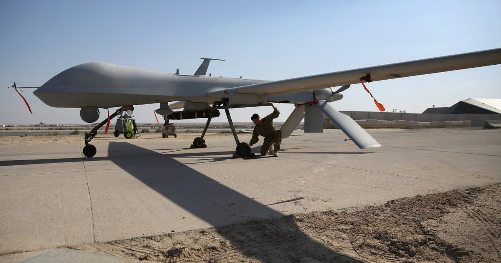

ООН отложила принятие правил по автономному оружию на два года
Дипломаты ООН в Женеве не смогли согласовать правовые нормы для регулирования автономных систем оружия, известных как «роботы-убийцы». После недели переговоров стороны договорились лишь начать обсуждение вариантов регулирования в течение двух лет, оставив вопрос обязательности будущих правил открытым.
Ход переговоров и достигнутый компромисс
На встрече в Женеве представители стран рассматривали проект создания юридически обязательных норм для автономного оружия. Международный комитет Красного Креста, хранитель Женевских конвенций, настаивал на принятии обязательных правил в течение года, что поддерживали генеральный секретарь ООН и папа Римский. Однако итоговым решением стал компромисс: странам дали два года на выработку предложений, а сами переговоры о содержании и механизмах обеспечения исполнения, вероятно, затянутся на более длительный срок.
В итоговом документе зафиксирована возможность того, что часть будущих норм останется необязательной. Такая формулировка отражает разногласия между государствами, которые считают необходимым жесткое правовое ограничение, и теми, кто предпочитает гибкие рекомендации. Чрезвычайная ситуация с применением полуавтономных систем и дронов в конфликтах на Украине, в Газе и Судане, по мнению гуманитарных организаций, требует более оперативных решений, чем предусматривает принятый график.

Позиции ключевых игроков и причины заминки
По данным американского радио NPR, основными препятствиями для продвижения переговоров выступили Россия, Израиль и США. В первый день Россия заблокировала утверждение повестки дня, что сбило рабочий ритм совещания. Позже США предложили пятилетний срок для обсуждения необязательных рекомендаций, что фактически означало отказ от быстрого создания обязательного правового инструмента. Эти шаги демонстрируют неготовность ведущих военных держав принимать на себя обязательства, ограничивающие развитие и применение новых технологий.
Сторонники жесткого регулирования указывают на рост числа жертв среди гражданского населения от ударов высокоточного и автономного оружия. Отсутствие четких правил ответственности и различия между военными и гражданскими объектами при алгоритмическом принятии решений создает правовой вакуум. При этом страны-разработчики передовых систем стремятся сохранить свободу действий, ссылаясь на необходимость дальнейшего изучения технологий и их военной эффективности.

Проблема обеспечения исполнения и ответственности
Даже если странам удастся согласовать текст конвенции или протокола, вопрос механизмов контроля останется открытым. Автономные системы могут действовать без прямого человеческого участия в момент применения силы, что усложняет установление вины за нарушения гуманитарного права. Традиционные модели ответственности командира или оператора теряют актуальность, когда алгоритм самостоятельно выбирает цель и момент удара на основе обучающих выборок и датчиков в реальном времени.
Международное гуманитарное право требует различия, пропорциональности и меры предосторожности, но проверка соблюдения этих принципов алгоритмами — задача нерешенная. Техническая прозрачность систем, аудит кода, независимая экспертиза и международный реестр развертываний пока не имеют унифицированных стандартов. Без них любые соглашения рискуют остаться декларативными, не влияющими на реальную практику применения оружия в зоне конфликта.
Перспективы дальнейшего диалога и роль гражданского общества
Двухлетний срок на выработку предложений открывает окно для экспертной работы и публичных обсуждений. Гуманитарные организации, научные центры и профессиональные сообщества инженеров могут сформировать техническую базу для будущих норм, определив красные линии автономии и критерии человеческого контроля. Исторический опыт запрета противошахтных мин и кассетных боеприпасов показывает, что устойчивые режимы создаются при союзе государств, гражданского общества и международных организаций.
Однако геополитическое противостояние и гонка вооружений создают риск того, что технологии опередят право. Каждый год задержки означает появление новых систем с более высокой степенью автономии на поле боя. Задача дипломатов на ближайшие совещания — перевести процесс из фазы процедурных споров в фазу предметной работы над текстом, который станет обязательным для всех сторон и будет иметь реальные механизмы верификации и санкций за нарушения.
Коротко: ООН не приняла обязательных правил по автономному оружию, ограничившись решением начать обсуждение вариантов в двухлетнем горизонте. Главные военные державы блокируют жесткое регулирование, а гуманитарные риски от применения дронов и искусственного интеллекта в конфликтах продолжают расти.
Как вы считаете, возможно ли достичь международного консенсуса по ограничению автономного оружия в текущей геополитической обстановке?